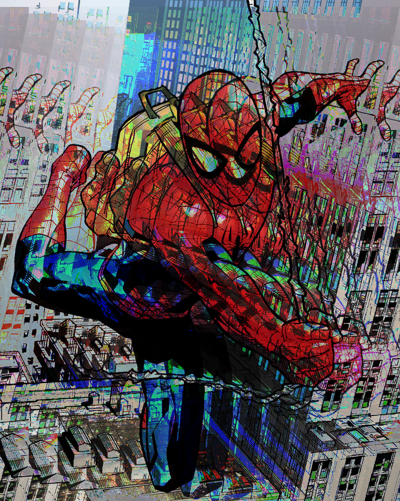
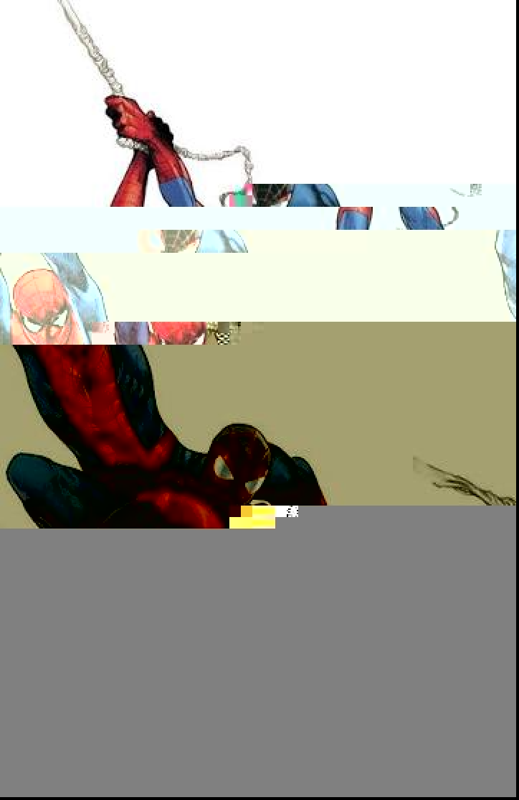

Glitch Art



These are the glitches that I made, and the images I used were both Spider-Man/Peter Parker as well as Mile Morales. The first to images I used the same glitch method for both of them and it was Audacity. And for the last image I used the TextEdit method for it.